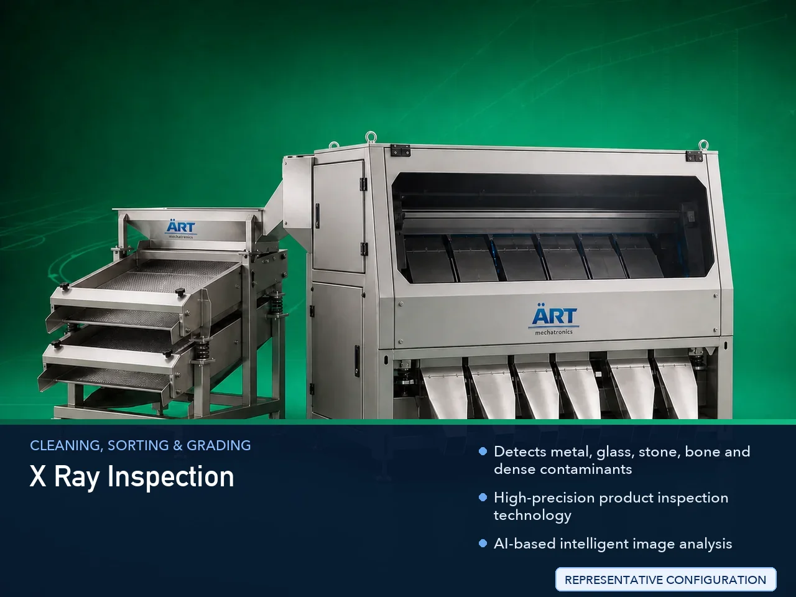

X-Ray Inspection Machine (Industrial Product Inspection & Contamination Detection System)
An X-Ray Inspection Machine, also known as an Industrial X-Ray Inspection System or Food X-Ray Scanner, is an advanced industrial quality control equipment designed for detecting contaminants, foreign particles, product defects, missing components, packaging abnormalities, and internal product…

About the X Ray Inspection
Unlike conventional metal detectors, X-ray inspection systems can detect: ✔ Metal contaminants ✔ Glass particles ✔ Stones ✔ Bones ✔ Dense plastics ✔ Rubber fragments ✔ Product defects ✔ Missing product pieces
inside packaged or unpackaged products.
X-ray inspection machines are widely used in industries such as:
Food processing industries
Snack manufacturing plants
Pharmaceutical industries
Meat and seafood processing
Frozen food industries
Dairy industries
Packaging industries
Export food industries
where strict product safety, contamination control, and international quality standards are mandatory.
The machine uses: ✔ High-energy X-ray imaging ✔ Advanced digital imaging sensors ✔ AI-based image analysis ✔ Automated rejection systems
to inspect products with extremely high accuracy.
X-ray inspection machines are highly suitable for: ✔ Food contamination detection ✔ Packaged product inspection ✔ Quality control inspection ✔ Missing item detection ✔ Product integrity inspection ✔ Export quality assurance
ART Mechatronics offers high-performance X-ray inspection machines, engineered for high detection sensitivity, continuous industrial operation, hygienic design, and reliable inspection performance.
Working Principle of X-Ray Inspection Machine
Products move through X-ray inspection tunnel using conveyor system
X-ray generator emits controlled X-ray beam through product
Different materials absorb X-rays differently based on density
High-resolution sensors capture internal image of product Machine detects: ✔ Metal contaminants ✔ Glass particles ✔ Stones ✔ Bones ✔ Missing products ✔ Product defects
Intelligent software analyzes product image in real time Detects abnormalities and contamination instantly
Contaminated or defective products are removed automatically using: ✔ Air reject system ✔ Pusher reject mechanism ✔ Diverter system ✔ Drop reject system
Approved products continue safely toward packaging or dispatch line
Types of X-Ray Inspection Machines
- 1. Conveyor X-Ray Inspection Machine
Installed on: ✔ Food processing lines ✔ Packaging conveyor systems for continuous inspection.
- 2. Packaged Food X-Ray Machine
Designed for: ✔ Packaged food inspection ✔ Export quality assurance
- 3. Bulk Product X-Ray Inspection System
Suitable for: ✔ Powders ✔ Granules ✔ Bulk materials
- 4. Pharmaceutical X-Ray Inspection Machine
Used for: ✔ Medicine packaging inspection ✔ Missing tablet detection
- 5. Multi Lane X-Ray Inspection Machine
Suitable for: ✔ High-speed production lines
- 6. High Sensitivity Industrial X-Ray System
Designed for: ✔ Ultra-fine contamination detection applications
Industries Using X-Ray Inspection Machine
🍃 Food Processing Industry Food contamination and defect inspection 🍟 Snack Manufacturing Industry Packaged snack quality control 💊 Pharmaceutical Industry Medicine and blister pack inspection ❄️ Frozen Food Industry Frozen food contamination detection 🥩 Meat & Seafood Industry Bone and foreign particle detection 🥛 Dairy Industry Product integrity and contamination inspection 📦 Packaging Industry Final packaged product quality inspection 🌶️ Spice Industry Spice contamination detection and export inspection
Features & Advantages
✔ Detects metal, glass, stone, bone and dense contaminants ✔ High-precision product inspection technology ✔ AI-based intelligent image analysis ✔ Improves product safety and export compliance ✔ Detects missing and defective products ✔ Continuous industrial operation ✔ Automatic rejection systems available ✔ Hygienic food-grade construction ✔ User-friendly PLC/HMI operation
Technical Highlights
Inspection Technology: High-energy X-ray imaging Digital image processing AI-based analysis Detection Capability: Metal Glass Stone Bone Dense plastics Construction: Stainless Steel food-grade design Rejection Systems: Air reject Pusher reject Drop reject Installation Type: Conveyor type Bulk feed type Automation: Fully automatic PLC/HMI system
Turnkey X-Ray Inspection Solutions
ART Mechatronics offers: Complete X-ray inspection systems Packaging line integration Conveyor system integration Product rejection automation systems Installation & commissioning After-sales service & AMC
Why Choose Art Mechatronics
Expertise in industrial inspection and contamination control systems Customized solutions for food and pharmaceutical industries High-performance and reliable inspection technology Hygienic food-grade machine construction Proven industrial performance across sectors
Applications
Food Processing Plants Snack Manufacturing Facilities Pharmaceutical Manufacturing Units Frozen Food Industries Meat & Seafood Processing Plants Packaging Lines
Related Cleaning, Sorting & Grading machines
Get pricing & specs for the X Ray Inspection
Share the product, target capacity, current process and plant location. These details help our engineers discuss the right machine or line configuration.
One partner, from design to start-up
ART Mechatronics designs, manufactures, installs and commissions your X Ray Inspection solution with regional presence in India, UAE and Thailand.